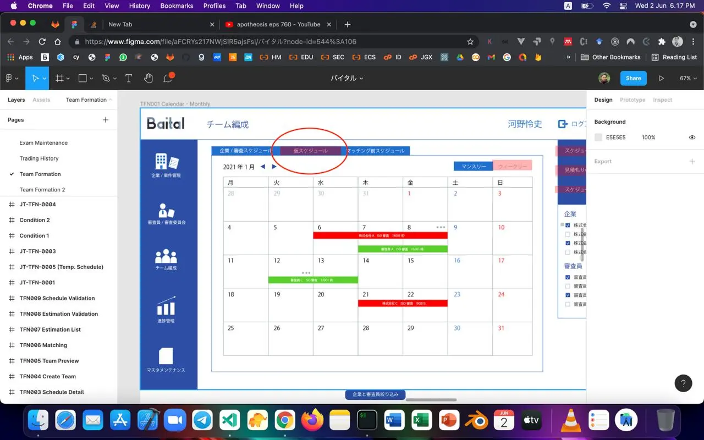
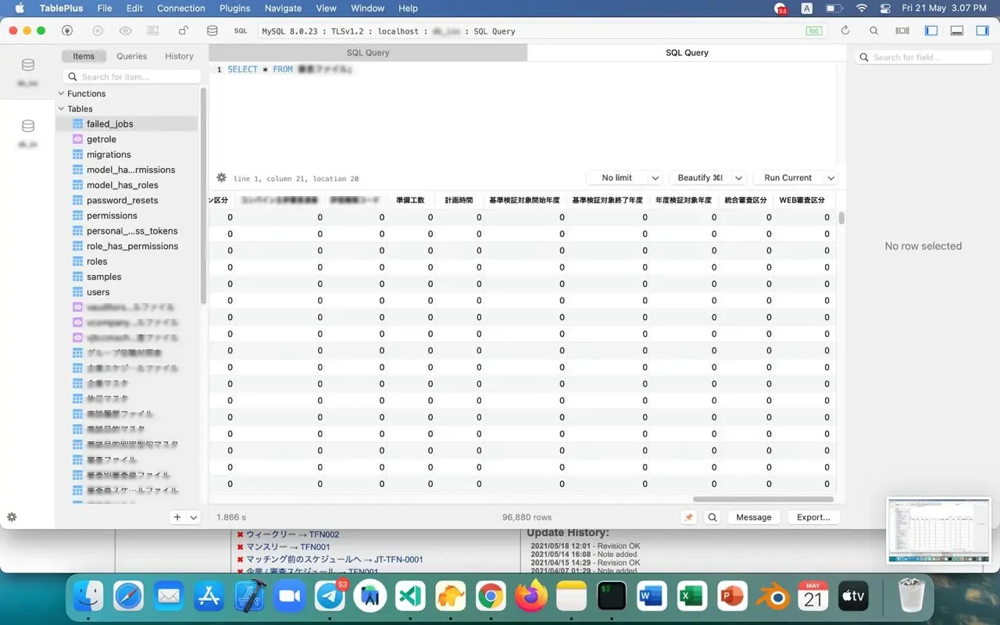

Three small moments from software work: a clear request, a question worth asking, and a risk shared early.
USER
PM
DEV
?
01 Clear request
USER “Pelanggan perlu bisa cek status pesanan.”
→▣
DEV “Siap. Status apa saja yang perlu pelanggan lihat?”
USER “Diproses, dikirim, dan selesai.”
DEV “Oke, saya tampilkan status itu di halaman pesanan.”
Jelas kebutuhannya, jelas langkah berikutnya.
Developer menanggapi langsung dan memastikan status apa saja yang perlu dilihat pelanggan. Setelah user menjelaskan, ia merangkum solusi yang disepakati.
02 Clarify first
USER “Bisa tambah diskon pelanggan baru?”
?%
PM “Diskonnya berlaku untuk siapa dan kapan?”
USER “Untuk pembelian pertama.”
PM “Oke. Bisa selesai dalam sehari?”
DEV “Saya cek cakupannya dulu. Hari ini saya kabari estimasi yang lebih pasti.”
Klarifikasi dulu, lalu beri estimasi yang bertanggung jawab.
PM memastikan arti “pelanggan baru” bersama user. Setelah aturannya jelas, Developer tetap tidak menebak durasi: ia mengecek cakupan dan berjanji kembali dengan estimasi pada waktu yang jelas.
03 Raise risk early
DEV · 09.00 “Target 12.00 berisiko mundur; kendalanya ada di sinkronisasi data.”
!12:00
DEV “Bisa rilis bagian inti dulu atau geser target. Saya kabari lagi 10.00.”
PM “Saya cek prioritas dan sampaikan opsinya ke user.”
Risiko disampaikan bersama opsi dan waktu update.
Developer memberi kabar saat masih ada waktu untuk memilih. Ia menjelaskan hambatan, menawarkan opsi, dan menetapkan waktu kabar berikutnya; PM membantu menyepakati prioritas dengan user.
02 / Project log
Selected projects.
Three snapshots across active products, enterprise modernization, and operational software.
01 / Maritime operations
SAL operations
Operational tools for fleet, river, jetty, and vessel workflows.
Situation
Field and operations teams need current status across moving assets.
Task
Support fleet, river, jetty, and vessel workflows.
Action
Built web and mobile workflows, monitoring, and operational integrations.
Result
River and jetty monitoring and barge setup workflows are shown in the walkthroughs.
Result River and jetty monitoring and barge setup workflows are shown in the walkthroughs.
Read the process
Situation
Field and operations teams need current status across moving assets.
Task
Support fleet, river, jetty, and vessel workflows.
Action
Built web and mobile workflows, monitoring, and operational integrations.
River & jetty monitoring / user-controlled walkthroughBarge setup workflow / structured operational data entry
02 / Enterprise modernization
Japan enterprise platform
Bringing a 20-year-old desktop system into a maintainable web platform.
Situation
A 20-year-old desktop system needed a browser-based future.
Task
Translate established operational workflows to the web.
Action
Translated 200+ UI designs and contributed to the Oracle → MySQL → Oracle 12c transition.
Result
The enterprise platform and anonymized database transition are shown in the project evidence.
Result The enterprise platform and anonymized database transition are shown in the project evidence.
Read the process
Situation
A 20-year-old desktop system needed a browser-based future.
Task
Translate established operational workflows to the web.
Action
Translated 200+ UI designs and contributed to the Oracle → MySQL → Oracle 12c transition.
Confidential client · Verified scope only

Enterprise platform / operational scheduling

Database transition / Oracle → MySQL → Oracle 12c
03 / Active product
YoCateTin
Everyday spending, turned into structured records through a familiar chat workflow.
Situation
Daily spending is easy to lose track of in a spreadsheet.
Task
Make expense capture feel like a familiar chat workflow.
Action
Led product direction, engineering, and deployment.
Result
The active web product turns chat input into structured spending records.
Result The active web product turns chat input into structured spending records.
Read the process
Situation
Daily spending is easy to lose track of in a spreadsheet.
Task
Make expense capture feel like a familiar chat workflow.
Action
Led product direction, engineering, and deployment.